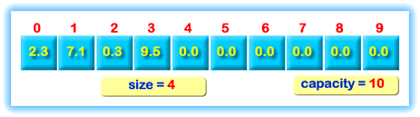

Appending Elements
When you don't know how large an array should be when you write the code, then you should plan for the "worst case", and declare an array that you know is larger than you could ever possibly need. Then, only use part of it.
Go ahead and modify the example on the previous page. We want to allow the user to input any number of values, (or at least a very large number), instead of automatically filling the array with 10 values.
- Define a constant that indicates the maximum number of elements used, (like 100), and use that constant in the declaration of the array.
- Create a separate variable to track
the effective size of the array. The names
size and capacity are
typically used for these variables.

- Write an input loop using while that checks the necessary bounds condition, while(size < capacity)... This ensures that the loop never overfills the array.
- Use the loop-and-a-half idiom to leave the loop whenever the sentinel value (0) is entered, or, when cin enters the failed state from invalid input.
- Store the value into the array, and update the size variable so that the next number entered will be placed in the next element of the array.
 This course content is offered under a
CC
Attribution Non-Commercial license. Content in this course
can be considered under this license unless otherwise noted.
This course content is offered under a
CC
Attribution Non-Commercial license. Content in this course
can be considered under this license unless otherwise noted.